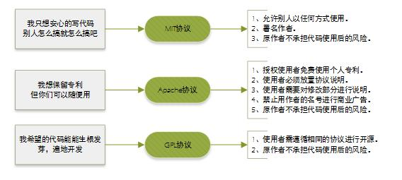
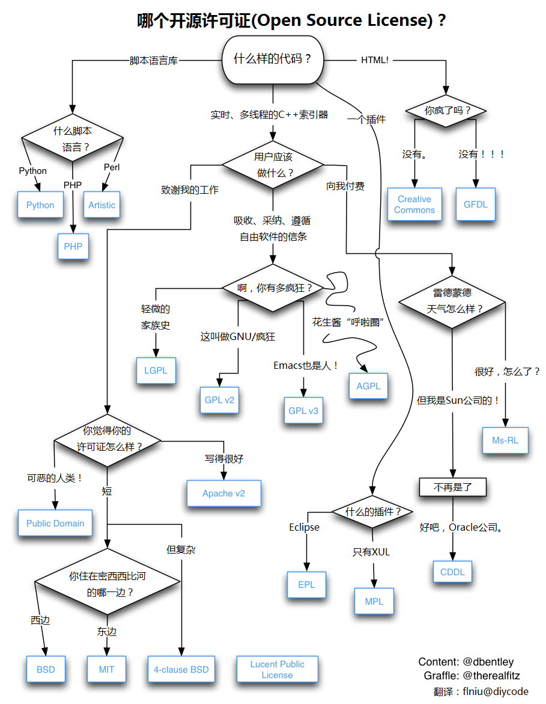

There are probably hundreds of open source licenses in the world. Today we will introduce several common open source licenses we encounter. Roughly they include GPL, BSD, MIT, Mozilla, Apache, LGPL, etc.

Apache License
The Apache License is a free software license published by the Apache Software Foundation.
The Apache License is the license adopted by Apache, the well-known non-profit open source organization. This license is similar to BSD; it also encourages code sharing and preserves the original author's copyright, and also allows modification and redistribution of source code. However, the following conditions must be followed:
- Users of the code must be given a copy of the Apache License.
- If the code is modified, you must state in the modified files that they have been changed.
- In derivative code (both modified code and code derived from the source code), you must include the license, trademark, patent notices, and other attributions required by the original author from the original code.
- If the redistributed product contains a NOTICE file, the NOTICE file must include the Apache License. You may add your own license terms in the NOTICE, but you may not present them as changes to the Apache License.
- The Apache License is also a business-friendly license. Users can modify the code when needed and publish/sell it as open source or commercial products.
The advantages of using this license are:
Permanent rights: Once granted, you own them permanently.
Worldwide rights: If you obtain the license in one country, it applies to all countries. For example, if you are in the U.S. and the license is granted from India, it's fine.
Royalty-free: No royalties, no fees upfront or later.
Non-exclusive license: Anyone can obtain the license.
Irrevocable license: Once granted, no one can revoke it. For example, if you develop derivative products based on this product's code, you don't need to worry about being forbidden to use that code one day.
BSD
BSD is the abbreviation for "Berkeley Software Distribution," meaning "Berkeley Software Distribution."
BSD open source license: It is a license that gives users a great deal of freedom. You can freely use and modify the source code, and redistribute the modified code as open source or proprietary software. When you publish code that uses the BSD license, or develop your own product based on BSD-licensed code, you must meet three conditions:
- 1. If the redistributed product includes source code, the source code must contain the original BSD license.
- 2. If only binary libraries/software are redistributed, the documentation and copyright notice of the library/software must include the original BSD license.
- 3. You may not use the name of the author/organization of the open source code or the name of the original product for marketing purposes.
BSD code encourages code sharing but requires respect for the author's copyright. Because BSD allows users to modify and redistribute code, and also allows using or developing commercial software on BSD code for publication and sale, it is a very business-integration-friendly license. Many companies and enterprises choose the BSD license first when selecting open source products, because they can fully control these third-party codes and modify or do secondary development when necessary.
GPL
GPL (GNU General Public License): GNU General Public License.
Linux uses the GPL.。
The GPL license is very different from BSD, Apache License, and other licenses that encourage code reuse. The starting point of the GPL is that code must be open source/free to use, and referenced/modified/derived code must also be open source/free to use, but it does not allow modified and derivative code to be released and sold as closed-source commercial software. This is why we can use various free Linux distributions, including those from commercial companies, and various free software on Linux developed by individuals, organizations, and commercial software companies.
LGPL
LGPL is an open source license from GPL designed mainly for library use. Unlike the GPL, which requires any software that uses/modifies/derives from GPL libraries to adopt the GPL license, LGPL allows commercial software to use LGPL libraries through linking without needing to open source the commercial software's code. This allows open source code under the LGPL to be referenced as a library by commercial software and then published and sold.
However, if you modify LGPL-licensed code or create derivatives, then all modified code, additional code related to the modified parts, and derivative code must be under the LGPL license. Therefore, LGPL open source code is very suitable for use as a third-party library referenced by commercial software, but it is not suitable for commercial software that wants to do secondary development based on LGPL code through modification and derivation.
Both GPL and LGPL protect the intellectual property of the original author, preventing people from using open source code to copy and develop similar products.
MIT
MIT is a license as broad as BSD, originating from the Massachusetts Institute of Technology (MIT), also known as the X11 license. The author only wants to retain copyright, without any other restrictions. MIT is similar to BSD but more permissive than the BSD license; it is currently the least restrictive license. The only condition of this license is that the modified code or distribution package must include the original author's license information. Suitable for commercial software. Software projects using MIT include: jquery, Node.js.
MIT is similar to BSD but more permissive than the BSD license; it is currently the least restrictive license. The only condition of this license is that the modified code or distribution package must include the original author's license information. Suitable for commercial software. Software projects using MIT include: jquery, Node.js.
MPL (Mozilla Public License 1.1)
The MPL license allows free redistribution and free modification, but requires that the copyright of modified code belongs to the software's initiator. This licensing protects the interests of commercial software; it requires that modifications based on this software contribute copyright to the software for free. In this way, the copyright of all code around the software is concentrated in the hands of the original developer. However, MPL allows modification and free use. MPL software has no requirements on linking.
EPL (Eclipse Public License 1.0)
EPL allows recipients to freely use, copy, distribute, transmit, display, modify, and conduct secondary commercial releases of modified closed-source code.
To use the EPL license, you must follow the following rules:
- When a Contributor releases the source code in whole or in part as open source again, it must continue to be published under the EPL open source license, and cannot be released under another license, unless you have obtained authorization from the original "source code" Owner.
- Under the EPL license, you can commercially release the source code without any modification. But if you want to release modified source code, or when you redistribute Object Code, you must declare that its Source Code is available and inform others how to obtain it.
- When you need to mix EPL source code as a part with other proprietary source code and release it as a Project, you can publish the entire Project/Product under a private license, but you must state which part of the code is under EPL and declare that that part continues to follow EPL.
- 4. Separate Modules do not need to be open sourced.
Creative Commons License
Creative Commons (CC) licenses cannot be considered true open source licenses; they are mostly used in design-related projects. There are many types of CC licenses, each granting specific rights. A CC license has four basic parts, which can work individually or be combined. Below is a brief introduction to these parts:
- 1. Attribution: The work must be attributed to its creator. After that, the work can be modified, distributed, copied, and used for other purposes.
- 2. ShareAlike: The work can be modified, distributed, or otherwise operated on, but all derivatives must be placed under the CC license.
- 3. NonCommercial: The work can be modified, distributed, etc., but cannot be used for commercial purposes. However, the language explaining what "commercial" means is very vague (no precise definition is provided), so you can clarify it in your project. For example, some people simply interpret "non-commercial" as not being able to sell the work. Others think you can't even use it on websites with ads. Still others think "commercial" only means using it to make a profit.
- 4. NoDerivatives
The terms of CC licenses can be freely combined. Most of the stricter CC licenses include the "Attribution, NonCommercial, NoDerivatives" terms, which means you can freely share the work, but you cannot change it or charge for it, and you must attribute the work. This license is very useful; it allows your work to spread while retaining partial or complete control over its use. The least restrictive CC license type is the "Attribution" license, which means as long as people maintain your credit, they can use your work in any way.
CC licenses are more often used in design-type projects than development-type ones, but no one prevents you from using them for the latter. You just need to be clear about which rights each part of the terms covers and does not cover.
Graphical Analysis


